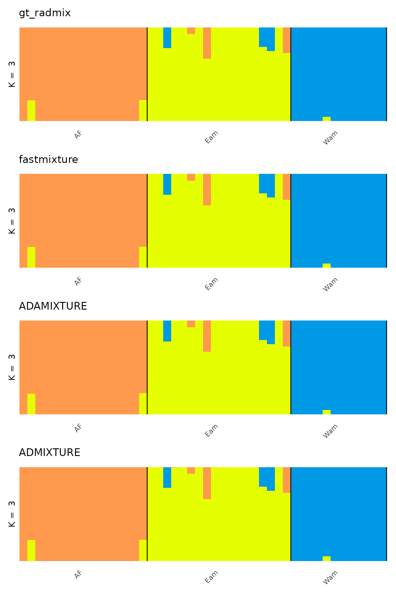

Installing and running external tools
Source:vignettes/articles/external_tools.Rmd
external_tools.Rmdtidygenclust estimates ancestry with the ADMIXTURE model
natively, with gt_radmix(). It also provides interfaces to
three external programs that fit the same model: the original ADMIXTURE
program (Alexander et al. 2009), run with
tidypopgen::gt_admixture(), and the python packages
fastmixture (Santander et al. 2024), run with
gt_fastmixture(), and ADAMIXTURE (Saurina-i-Ricos et
al. 2026), run with gt_adamixture(). These programs are
optional: they are not needed by the rest of
tidygenclust.
In this article, we show how to install the three programs and how to
run them, alongside gt_radmix(), on the dataset of the
lizard Anolis punctatus (Prates et al. 2018) used in the main
vignette, and we check that the four programs give consistent ancestry
proportions. For a comparison of their performance, see the article
“Benchmarking gt_radmix() against ADMIXTURE, fastmixture and
ADAMIXTURE”.
gt_radmix() estimates individual ancestry proportions
(Q) and ancestral allele frequencies (P) with the method and the
algorithm of ADMIXTURE, implemented in C++ within
tidygenclust, so no external program is needed. It includes
the cross-validation of ADMIXTURE, to choose K, it supports
pseudohaploid data, and it can start from an SVD of the genotypes (see
?gt_radmix). If you use it, please cite Alexander et
al. (2009) for the method, and, if you use cross-validation, Alexander
and Lange (2011). If you use fastmixture, cite Santander et al. (2024),
if you use ADAMIXTURE, Saurina-i-Ricos et al. (2026), and if you use
ADMIXTURE, Alexander et al. (2009).
Installing the external tools
We use reticulate to install the three programs in a
conda environment, ctidygenclust, so you, as a user, should
not need to worry about the details of the python packages or their
dependencies. This only works on Linux at the moment: on Windows, the
programs can be used through the WSL; on macOS, they are not available,
as the OpenMP library that they use conflicts with that of R (used by
packages such as bigstatsr), which crashes the R session.
ADAMIXTURE is installed from PyPI in its CPU version, which does not
need PyTorch. You can install all three programs with:
or choose which programs to install, e.g. only
fastmixture:
tgc_tools_install(tools = "fastmixture")Programs can be added later to an existing environment with
tgc_fastmixture_install(),
tgc_admixture_install() and
tgc_adamixture_install():
Checking which programs are installed
tgc_tools_version() reports which programs are installed
(NA for those that are not):
library(tidypopgen)
#> Loading required package: dplyr
#>
#> Attaching package: 'dplyr'
#> The following objects are masked from 'package:stats':
#>
#> filter, lag
#> The following objects are masked from 'package:base':
#>
#> intersect, setdiff, setequal, union
#> Loading required package: tibble
library(tidygenclust)
tools_version <- tgc_tools_version()
tools_version
#> $fastmixture
#> [1] "v1.3.0"
#>
#> $admixture
#> [1] "1.3.0"
#>
#> $adamixture
#> [1] "1.8.9"The code that runs each program in this article is only run if that program is available, and the comparison only if all three are:
The data
We read the vcf file of the 46 lizards into a
gen_tibble, add the population information, and group the
individuals by the three genetic groups found by Prates et al. (2018):
Eastern Amazonia (Eam), Western Amazonia (Wam) and the Atlantic Forest
(AF):
vcf_path <- system.file(
"/extdata/anolis/punctatus_t70_s10_n46_filtered.recode.vcf.gz",
package = "tidypopgen"
)
anole_gt <- gen_tibble(vcf_path,
quiet = TRUE, backingfile = tempfile("anolis_"),
parser = "cpp"
)
pops_path <- system.file("/extdata/anolis/punctatus_n46_meta.csv",
package = "tidypopgen"
)
pops <- utils::read.csv(pops_path)
anole_gt <- anole_gt %>%
left_join(pops, by = "id") %>%
group_by(pop)
anole_gt
#> # A gen_tibble: 3249 loci
#> # A tibble: 46 × 6
#> # Groups: pop [3]
#> id genotypes population longitude latitude pop
#> <chr> <vctr_SNP> <chr> <dbl> <dbl> <chr>
#> 1 punc_BM288 [0,0,...] Amazonian_Forest -51.8 -3.32 Eam
#> 2 punc_GN71 [2,0,...] Amazonian_Forest -54.6 -9.73 Eam
#> 3 punc_H1907 [0,2,...] Amazonian_Forest -64.8 -9.45 Wam
#> 4 punc_H1911 [0,2,...] Amazonian_Forest -64.8 -9.44 Wam
#> 5 punc_H2546 [0,1,...] Amazonian_Forest -65.4 -9.60 Wam
#> 6 punc_IBSPCRIB0361 [0,0,...] Atlantic_Forest -46.0 -23.8 AF
#> 7 punc_ICST764 [0,0,...] Atlantic_Forest -36.3 -9.81 AF
#> 8 punc_JFT459 [0,0,...] Atlantic_Forest -40.5 -20.3 AF
#> 9 punc_JFT773 [0,0,...] Atlantic_Forest -40.5 -20.0 AF
#> 10 punc_LG1299 [0,0,...] Atlantic_Forest -39.1 -15.3 AF
#> # ℹ 36 more rowsFor each program, we make a single run for K = 3.
Running gt_radmix()
anole_radmix <- gt_radmix(anole_gt, k = 3, seed = 1)
summary(anole_radmix)
#> Admixture results for k = 3
#> with slots:
#> $Q for Q matrices
#> $P for matrices
#> $log for logs from the algorithmThe results are stored in a gt_admix object, so we can
use all the methods from tidypopgen (see the main
vignette).
Running fastmixture
gt_fastmixture() runs fastmixture on a
gen_tibble (reading its backing file directly) or on a set
of PLINK files. Its arguments follow those of fastmixture, so some
differ from those of gt_radmix(): the number of cores is
set with threads, and cross-validation with
cv, the number of folds. By default, it only returns the Q
matrices (set no_freqs = FALSE to also keep the P
matrices). As the fastmixture program does, it starts from a randomised
SVD of the genotypes, which needs all the loci to be polymorphic
(random_init = TRUE starts from random values instead, but
can take much longer to converge). fastmixture prints its progress,
which we hide here:
anole_fm <- gt_fastmixture(anole_gt, k = 3, seed = 1)
summary(anole_fm)
#> Admixture results for k = 3
#> with slots:
#> $Q for Q matricesRunning ADMIXTURE
tidypopgen::gt_admixture() runs the original ADMIXTURE
program: it writes the gen_tibble to PLINK files, runs
ADMIXTURE on them, and reads its results back into a
gt_admix object, with the log-likelihood and the log of
each run. With conda_env = "auto" (the default), it uses
the ADMIXTURE installed by tgc_tools_install():
anole_adm <- gt_admixture(anole_gt, k = 3, seed = 1)
summary(anole_adm)
#> Admixture results for k = 3
#> with slots:
#> $Q for Q matrices
#> $P for matrices
#> $log for logs from the algorithmRunning ADAMIXTURE
gt_adamixture() runs ADAMIXTURE, which combines a
spectral initialisation (SVD and ALS) with accelerated block relaxation
(BR-QN), on a gen_tibble or on a set of PLINK files. Like
gt_fastmixture(), it sets the number of cores with
threads and cross-validation with cv, and by
default it only returns the Q matrices (set
no_freqs = FALSE to also keep the P matrices). ADAMIXTURE
prints its progress, which we turn off with
verbose = FALSE:
anole_ada <- gt_adamixture(anole_gt, k = 3, seed = 1, verbose = FALSE)
summary(anole_ada)
#> Admixture results for k = 3
#> with slots:
#> $Q for Q matricesComparing the results
All four programs return gt_admix objects, which can be
plotted with autoplot(). The labels of the clusters are
arbitrary, so we first match the clusters of gt_radmix(),
fastmixture and ADAMIXTURE to those of ADMIXTURE, so that each cluster
has the same colour in all the plots:
# all permutations of 1:n
permutations <- function(n) {
if (n == 1) {
return(matrix(1))
}
sub <- permutations(n - 1)
do.call(rbind, lapply(seq_len(n), function(i) {
cbind(i, matrix(setdiff(seq_len(n), i)[sub], nrow = nrow(sub)))
}))
}
# reorder the clusters of a gt_admix object with a single run, to best
# match those of the Q matrix q_ref
match_clusters <- function(adm, q_ref) {
q <- unclass(adm$Q[[1]])
perms <- permutations(ncol(q))
diffs <- apply(perms, 1, function(x) sum(abs(q[, x] - q_ref)))
best <- perms[which.min(diffs), ]
adm$Q[[1]] <- q_matrix(q[, best])
if (!is.null(adm$P)) {
adm$P[[1]] <- adm$P[[1]][, best]
}
adm
}
q_adm <- unclass(anole_adm$Q[[1]])
anole_radmix <- match_clusters(anole_radmix, q_adm)
anole_fm <- match_clusters(anole_fm, q_adm)
anole_ada <- match_clusters(anole_ada, q_adm)
library(ggplot2)
plots <- list(
autoplot(anole_radmix, type = "barplot", k = 3, run = 1,
annotate_group = TRUE
) +
ggtitle("gt_radmix"),
autoplot(anole_fm, type = "barplot", k = 3, run = 1,
annotate_group = TRUE
) +
ggtitle("fastmixture"),
autoplot(anole_ada, type = "barplot", k = 3, run = 1,
annotate_group = TRUE
) +
ggtitle("ADAMIXTURE"),
autoplot(anole_adm, type = "barplot", k = 3, run = 1,
annotate_group = TRUE
) +
ggtitle("ADMIXTURE")
)
patchwork::wrap_plots(plots, ncol = 1)
The four plots look the same. To confirm it, we compare the ancestry proportions of each individual with those estimated by ADMIXTURE:
q_differences <- function(adm) {
q <- unclass(adm$Q[[1]])
c(
max_abs_difference = max(abs(q - q_adm)),
correlation = stats::cor(as.vector(q), as.vector(q_adm))
)
}
rbind(
gt_radmix = q_differences(anole_radmix),
fastmixture = q_differences(anole_fm),
ADAMIXTURE = q_differences(anole_ada)
)
#> max_abs_difference correlation
#> gt_radmix 0.004659000 0.9999983
#> fastmixture 0.005003755 0.9999981
#> ADAMIXTURE 0.005059710 0.9999980Cross-validation
To choose K, all four programs can compute a cross-validation error
for each run, with crossval = TRUE in
gt_radmix() and gt_admixture(), and with
cv (the number of folds) in gt_fastmixture()
and gt_adamixture():
gt_radmix(anole_gt, k = 2:4, n_runs = 3, crossval = TRUE)
gt_admixture(anole_gt, k = 2:4, n_runs = 3, crossval = TRUE)
gt_fastmixture(anole_gt, k = 2:4, n_runs = 3, cv = 5)
gt_adamixture(anole_gt, k = 2:4, n_runs = 3, cv = 5)gt_radmix() implements the procedure of ADMIXTURE, which
hides random genotypes. ADAMIXTURE also hides random genotypes, but it
refits each fold with only 5 iterations, starting from the estimates of
the full data. fastmixture instead hides whole individuals. The errors
of the programs are therefore on different scales, and only the values
of K that they favour can be compared.
References
Alexander DH, Novembre J, Lange K (2009) Fast model-based estimation of ancestry in unrelated individuals. Genome Research, 19(9), 1655-1664.
Alexander DH, Lange K (2011) Enhancements to the ADMIXTURE algorithm for individual ancestry estimation. BMC Bioinformatics, 12, 246.
Prates I, Penna A, Rodrigues MT, Carnaval AC (2018) Local adaptation in mainland anole lizards: Integrating population history and genome-environment associations. Ecology and Evolution, 8(23), 11932-11944.
Saurina-i-Ricos J, Mas Montserrat D, Ioannidis AG (2026) ADAMIXTURE: adaptive first-order optimization for biobank-scale genetic clustering. Bioinformatics, 42(Supplement_1), btag236. https://doi.org/10.1093/bioinformatics/btag236
Santander CG, Refoyo Martinez A, Meisner J (2024) Faster model-based estimation of ancestry proportions. Peer Community Journal, 4: e115. https://doi.org/10.24072/pcjournal.503